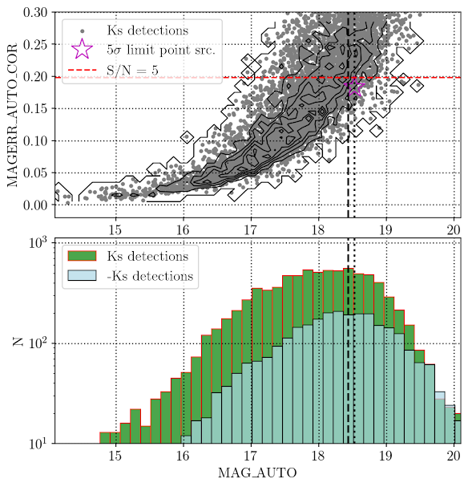

Figure 1:Images of NGC 2992 in the J (left panel) and Ks (right panel) filters

Figure 2: K-band spectrum of NGC 2992 centered on the emission peak of the galaxy. The extraction aperture was 1" along the spatial direction, corresponding to 2 x FWHM. Emission lines of interest are indicated.

Figure 1: Top: Ks science image and the final background fit from Source-Extractor. Field of view is 3' by 3'. The red square indicates the regions displayed in the next two rows. Middle: 45" by 45" zoom-in of the central region. Bottom: Background subtracted science image with different contrast scales to highlight bright sources (left) and faint sources (right).

Figure 2: Top: Corrected magnitude error vs. MAG_AUTO for detection in the Ks band (grey points and black line contours). S/N=5 is indicated with the horizontal red dashed line at MAGERR_AUTO_COR = 0.198. The faintest 5-sigma point source detection in Ks (magenta open star) has MAG_AUTO=18.52 (vertical dotted line). The vertical dashed line is the magnitude limit from the distribution described below. Bottom: MAG_AUTO distribution of sources detected in Ks(green histogram), and -Ks (light blue histogram), in 0.15 magnitude bins. The dashed vertical line at MAG_AUTO= 18.44 indicates the magnitude limit as the maximum of the distribution and the last bin before counts drop. The vertical dotted line is the 5-sigma point source magnitude limit described above.

Figure 1: HST and Flamingos-2 image comparison of NGC 5128.